Chapter 7 Alternative risk measure
7.1 Motivation
One of main objective of this book is improving the 3 limits (risk measure, sensitivity to estimation errors and lacks of risk diversification) of Markowitz’s model TODO REF FORMER CHARPTER.
Variance is not a good measure of risk in practice since it penalizes both the unwanted high losses and the desired low losses (or gains)
We will here consider more meaningful measures for risk than the variance, like the downside risk (DR), Value-at-Risk (VaR), Conditional VaR (CVaR) or Expected Shortfall (ES), and drawdown (DD).
7.2 Risk measure
The mean return is not good enough and one needs to control the probability of going bankrupt. To overcome the limitations of the variance as risk measure, a number of alternative risk measures have been proposed, for example:
- Downside Risk (DR)
- Value-at-Risk (VaR)
- Conditional Value-at-Risk (CVaR)
- Drawdown (DD):
- maximum DD
- average DD
- Conditional Drawdown at Risk (CDaR)
- maximum DD
from = "2013-01-01"
to = "2016-12-31"
tickers <- c("AAPL", "AMD", "ADI", "ABBV", "AEZS", "A", "APD", "AA","CF")
assign_variable_global_env(tickers, from, to, ratio = 0.7)
N <- ncol(prices)
T <- nrow(prices)
T_trn <- round(T*0.7)
X <- X_log
mu <- colMeans(X)
Sigma <- cov(X)
plot(prices/rep(prices[1, ], each = nrow(prices)), col = rainbow10equal, legend.loc = "topleft",main = "Normalized prices")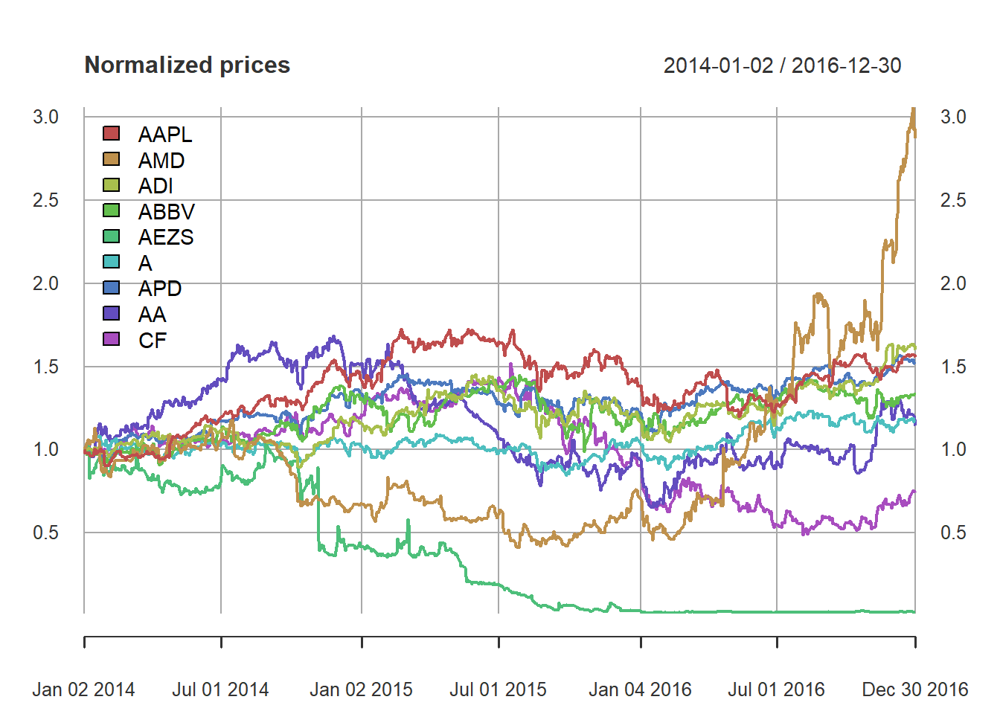
w_Markowitz <- MVP(mu, Sigma, lmd = 0.5, long_only = TRUE)
w_GMVP <- GMVP(Sigma, long_only = TRUE)
w_all <- cbind("GMVP" = w_GMVP,
"Markowitz" = w_Markowitz)
barplot(t(w_all), col = rainbow10equal[1:2], legend = colnames(w_all), beside = TRUE,
main = "Portfolio allocation", xlab = "stocks", ylab = "dollars")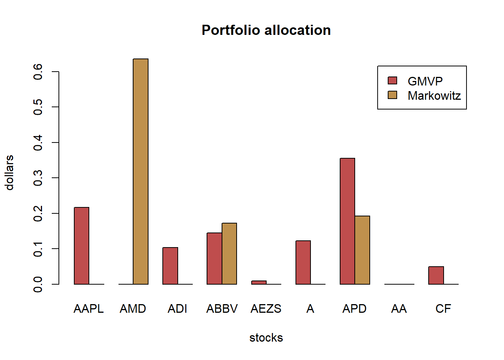
# compute returns of all portfolios
ret_all <- xts(X_lin %*% w_all, index(X_lin))
ret_all_trn <- ret_all[1:T_trn, ]
ret_all_tst <- ret_all[-c(1:T_trn), ]
# performance
t(table.AnnualizedReturns(ret_all_trn))
#> Annualized Return Annualized Std Dev Annualized Sharpe (Rf=0%)
#> GMVP 0.1794 0.1585 1.1324
#> Markowitz 0.0600 0.3343 0.1794
t(table.AnnualizedReturns(ret_all_tst))
#> Annualized Return Annualized Std Dev Annualized Sharpe (Rf=0%)
#> GMVP 0.1380 0.1656 0.8331
#> Markowitz 1.7712 0.5280 3.3546
{ chart.CumReturns(ret_all, main = "Cumulative return of portfolios",
wealth.index = TRUE, legend.loc = "topleft", colorset = rich10equal)
addEventLines(xts("training", index(X_lin[T_trn])), srt=90, pos=2, lwd = 2, col = "darkblue") }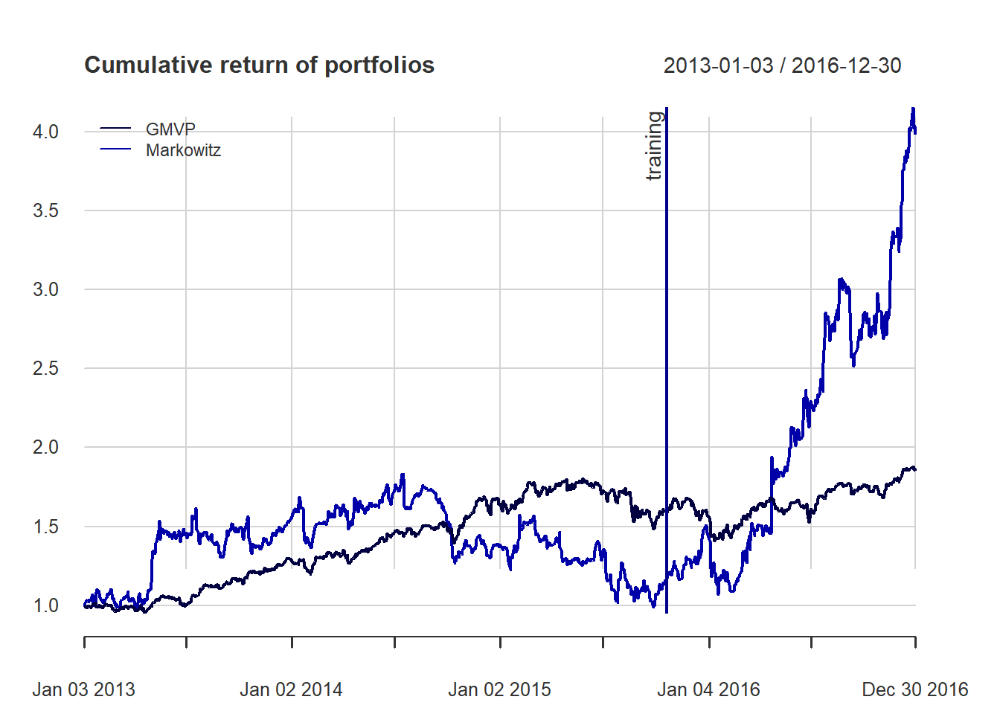
chart.CumReturns(ret_all_tst, main = "Cumulative return of portfolios (out-of-sample)",
wealth.index = TRUE, legend.loc = "topleft", colorset = rich10equal)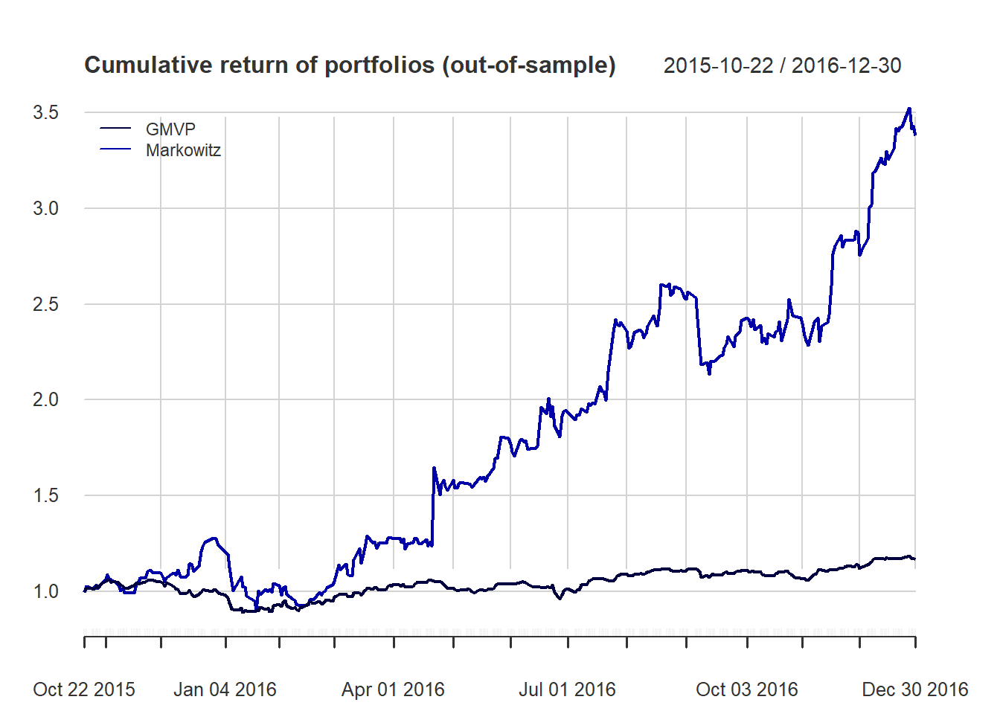
{ chart.Drawdown(ret_all, main = "Drawdown of portfolios",
legend.loc = "bottomleft", colorset = rich8equal)
addEventLines(xts("training", index(X_lin[T_trn])), srt=90, pos=2, lwd = 2, col = "darkblue") }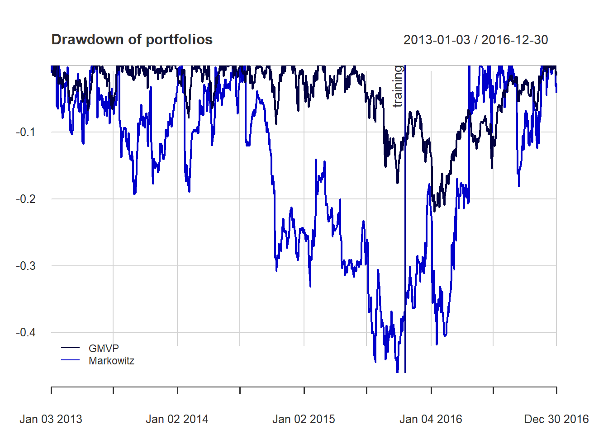
7.3 Alternative risk measure beased portfolio
7.3.1 Mean-downside risk portfolio
\[\begin{array}{ll} \underset{\mathbf{w}}{\textsf{maximize}} & \mathbf{w}^T\boldsymbol{\mu}-\lambda \frac{1}{T}\sum_{t=1}^T\left(\left(\tau - \mathbf{w}^T\mathbf{r}_t\right)^+\right)^\alpha\\ \textsf{subject to} & \mathbf{1}^T\mathbf{w}=1,\quad \mathbf{w}\ge\mathbf{0}. \end{array}\]
The semi-variance is a special case of the more general lower partial moments (LPM) \[\textsf{LPM} = \mathsf{E}\left[\left((\tau - R)^+\right)^\alpha\right]\] where \((\cdot)^+=\max(0, \cdot)\)
The parameter α reflects the investor’s feeling about the relative consequences of falling short of τ by various amounts: the value α = 1 (which suits a neutral investor) separates risk-seeking ( 0 < α < 1 ) from risk-averse ( α > 1 ) behavior with regard to returns below the target τ.
w_DR_alpha1 <- portfolioDR(X_log_trn, alpha = 1)
w_DR_alpha2 <- portfolioDR(X_log_trn, alpha = 2)
w_DR_alpha3 <- portfolioDR(X_log_trn, alpha = 3)
# combine portfolios
w_all <- cbind(
w_all,
"DR-alpha-1" = w_DR_alpha1,
"DR-alpha-2" = w_DR_alpha2,
"DR-alpha-3" = w_DR_alpha3
)
# compute returns of all portfolios
ret_all <- xts(X_lin %*% w_all, index(X_lin))
ret_all_trn <- ret_all[1:T_trn, ]
ret_all_tst <- ret_all[-c(1:T_trn), ]
# performance
t(table.AnnualizedReturns(ret_all_trn))
#> Annualized Return Annualized Std Dev Annualized Sharpe (Rf=0%)
#> GMVP 0.1794 0.1585 1.1324
#> Markowitz 0.0600 0.3343 0.1794
#> DR-alpha-1 0.2008 0.1616 1.2427
#> DR-alpha-2 0.1800 0.1582 1.1377
#> DR-alpha-3 0.1654 0.1571 1.0532
t(table.AnnualizedReturns(ret_all_tst))
#> Annualized Return Annualized Std Dev Annualized Sharpe (Rf=0%)
#> GMVP 0.1380 0.1656 0.8331
#> Markowitz 1.7712 0.5280 3.3546
#> DR-alpha-1 0.1197 0.1645 0.7276
#> DR-alpha-2 0.1127 0.1735 0.6495
#> DR-alpha-3 0.1164 0.1761 0.6611
table.DownsideRisk(ret_all_tst)
#> VaR calculation produces unreliable result (inverse risk) for column: 1 : -0.00755268710115424
#> GMVP Markowitz DR-alpha-1 DR-alpha-2
#> Semi Deviation 0.0076 0.0194 0.0075 0.0079
#> Gain Deviation 0.0066 0.0311 0.0066 0.0066
#> Loss Deviation 0.0073 0.0167 0.0071 0.0075
#> Downside Deviation (MAR=210%) 0.0124 0.0215 0.0124 0.0129
#> Downside Deviation (Rf=0%) 0.0073 0.0169 0.0072 0.0077
#> Downside Deviation (0%) 0.0073 0.0169 0.0072 0.0077
#> Maximum Drawdown 0.1619 0.2924 0.1746 0.1773
#> Historical VaR (95%) -0.0165 -0.0423 -0.0165 -0.0172
#> Historical ES (95%) -0.0239 -0.0542 -0.0230 -0.0248
#> Modified VaR (95%) -0.0171 NA -0.0169 -0.0182
#> Modified ES (95%) -0.0250 -0.0397 -0.0243 -0.0263
#> DR-alpha-3
#> Semi Deviation 0.0081
#> Gain Deviation 0.0066
#> Loss Deviation 0.0077
#> Downside Deviation (MAR=210%) 0.0130
#> Downside Deviation (Rf=0%) 0.0079
#> Downside Deviation (0%) 0.0079
#> Maximum Drawdown 0.1761
#> Historical VaR (95%) -0.0165
#> Historical ES (95%) -0.0258
#> Modified VaR (95%) -0.0186
#> Modified ES (95%) -0.0269
{ chart.CumReturns(ret_all, main = "Cumulative return of portfolios",
wealth.index = TRUE, legend.loc = "topleft", colorset = rich6equal)
addEventLines(xts("training", index(X_lin[T_trn])), srt=90, pos=2, lwd = 2, col = "darkblue") }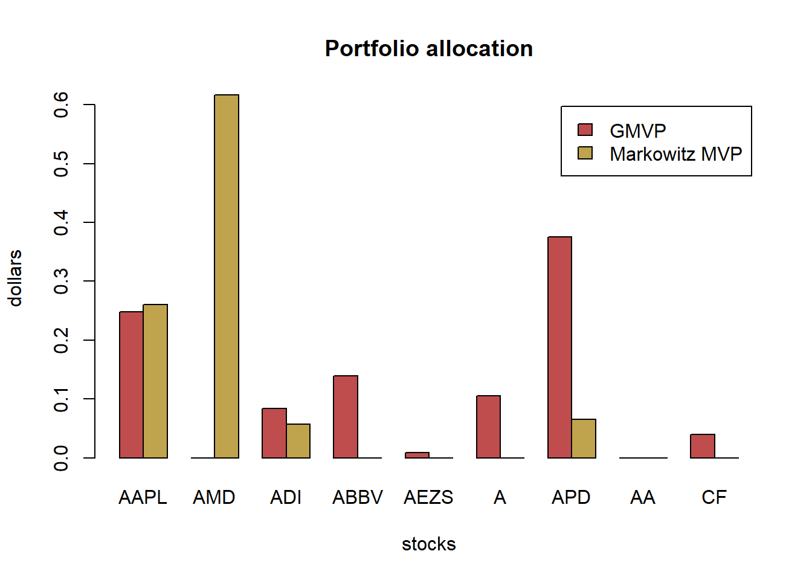
chart.CumReturns(ret_all_tst, main = "Cumulative return of portfolios (out-of-sample)",
wealth.index = TRUE, legend.loc = "topleft", colorset = rich6equal)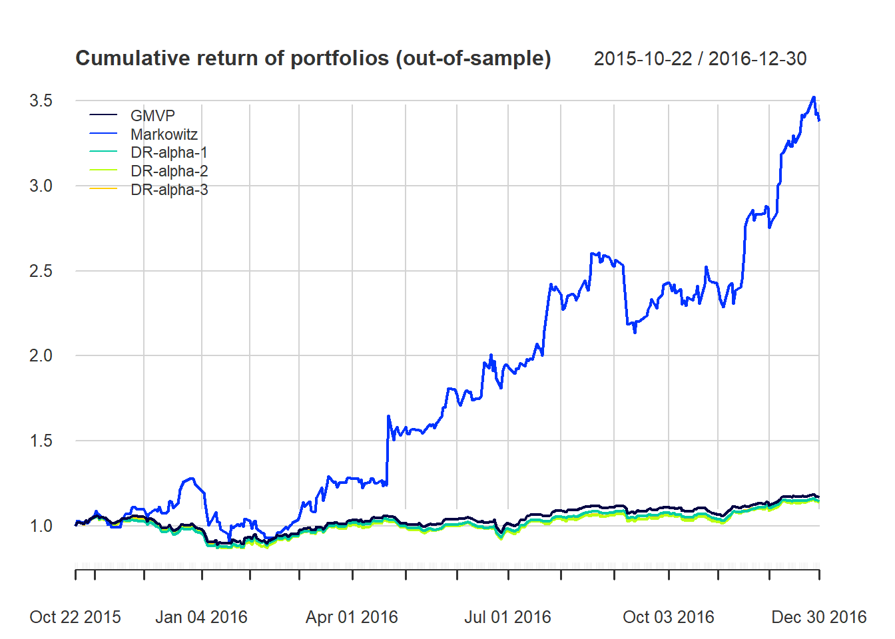
{ chart.Drawdown(ret_all, main = "Drawdown of portfolios",
legend.loc = "bottomleft", colorset = rich6equal)
addEventLines(xts("training", index(X_lin[T_trn])), srt=90, pos=2, lwd = 2, col = "darkblue") }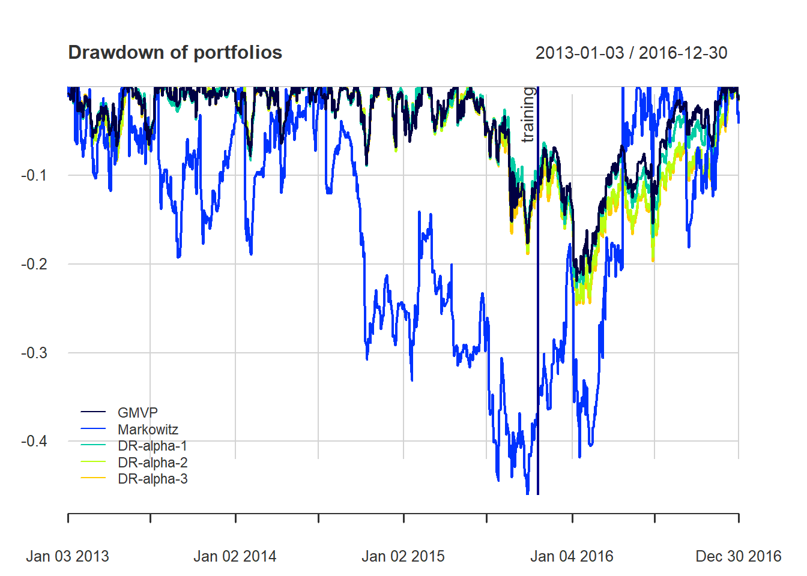
7.3.2 Mean-CVaR portfolio
\[\begin{array}{ll} \underset{\mathbf{w}}{\textsf{maximize}} & \mathbf{w}^{T}\boldsymbol{\mu}\\ \textsf{subject to} & \mathsf{CVaR}_{\alpha}\left(f\left(\mathbf{w},\mathbf{r}\right)\right)\leq c\\ & \mathbf{1}^T\mathbf{w}=1,\quad \mathbf{w}\ge\mathbf{0} \end{array}\]
\[\begin{array}{ll} \underset{\mathbf{w}, \mathbf{z}, \zeta}{\textsf{maximize}} & \mathbf{w}^T\boldsymbol{\mu} - \lambda\left(\zeta+\frac{1}{1-\alpha}\frac{1}{T}\sum_{t=1}^{T}z_{t}\right)\\ \textsf{subject to} & 0\leq z_{t}\geq-\mathbf{w}^{T}\mathbf{r}_{t}-\zeta,\quad t=1,\dots,T\\ & \mathbf{1}^T\mathbf{w}=1,\quad \mathbf{w}\ge\mathbf{0}. \end{array}\]
w_CVaR095 <- portolioCVaR(X_log_trn, alpha = 0.95)
w_CVaR099 <- portolioCVaR(X_log_trn, alpha = 0.99)
# combine portfolios
w_all <- cbind(w_all,
"CVaR-alpha-0.95" = w_CVaR095,
"CVaR-alpha-0.99" = w_CVaR099)
# compute returns of all portfolios
ret_all <- xts(X_lin %*% w_all, index(X_lin))
ret_all_trn <- ret_all[1:T_trn, ]
ret_all_tst <- ret_all[-c(1:T_trn), ]
# performance
t(table.AnnualizedReturns(ret_all_trn))
#> Annualized Return Annualized Std Dev Annualized Sharpe (Rf=0%)
#> GMVP 0.1794 0.1585 1.1324
#> Markowitz 0.0600 0.3343 0.1794
#> DR-alpha-3 0.1654 0.1571 1.0532
#> CVaR-alpha-0.95 0.1936 0.1718 1.1266
#> CVaR-alpha-0.99 0.1702 0.1610 1.0571
t(table.AnnualizedReturns(ret_all_tst))
#> Annualized Return Annualized Std Dev Annualized Sharpe (Rf=0%)
#> GMVP 0.1380 0.1656 0.8331
#> Markowitz 1.7712 0.5280 3.3546
#> DR-alpha-3 0.1164 0.1761 0.6611
#> CVaR-alpha-0.95 0.1643 0.1704 0.9645
#> CVaR-alpha-0.99 0.2636 0.1776 1.4844
{ chart.CumReturns(ret_all, main = "Cumulative return of portfolios",
wealth.index = TRUE, legend.loc = "topleft", colorset = rich6equal)
addEventLines(xts("training", index(X_lin[T_trn])), srt=90, pos=2, lwd = 2, col = "darkblue") }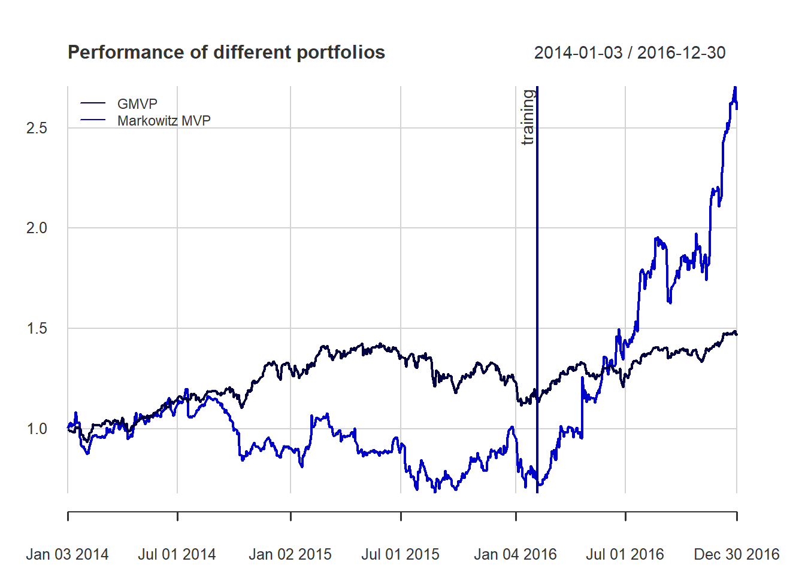
chart.CumReturns(ret_all_tst, main = "Cumulative return of portfolios (out-of-sample)",
wealth.index = TRUE, legend.loc = "topleft", colorset = rich6equal)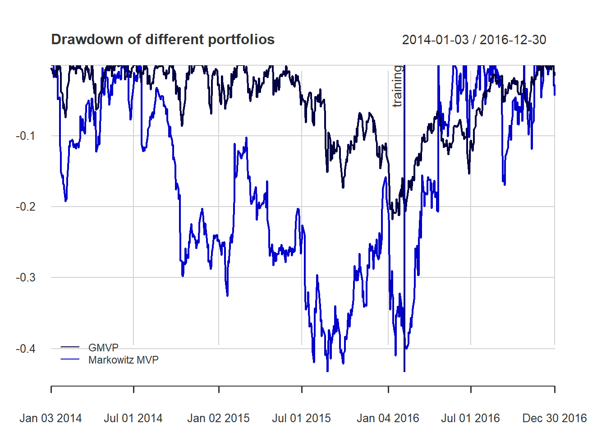
{ chart.Drawdown(ret_all, main = "Drawdown of portfolios",
legend.loc = "bottomleft", colorset = rich6equal)
addEventLines(xts("training", index(X_lin[T_trn])), srt=90, pos=2, lwd = 2, col = "darkblue") }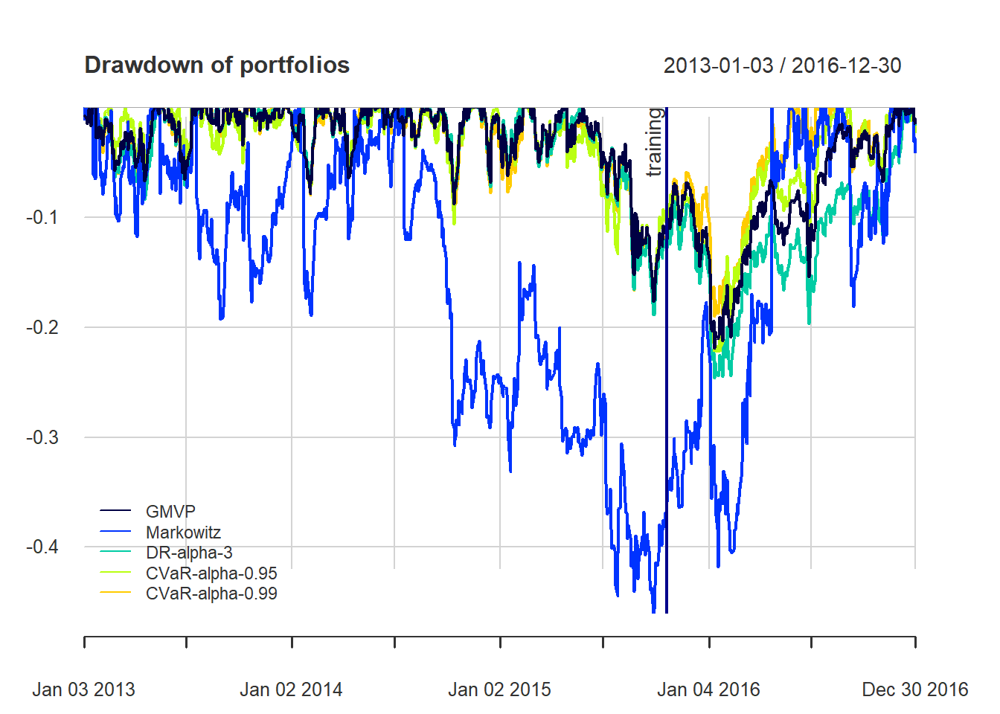
7.3.3 Mean - Max-DD portfolio
\[D(t)=\max_{1\le\tau\le t}r_p^{\sf cum}(\tau) - r_p^{\sf cum}(t)\]
- maximum DD (Max-DD)
- average DD (Ave-DD)
- Conditional Drawdown at Risk (CDaR)
\[\begin{array}{ll} \underset{\mathbf{w}, \{u_t\}}{\textsf{maximize}} & \mathbf{w}^T\boldsymbol{\mu}\\ \textsf{subject to} & \mathbf{w}^T\mathbf{r}_{t}^{\sf cum} \le u_t \le \mathbf{w}^T\mathbf{r}_t^{\sf cum} + c, \quad\forall 1\le t\le T\\ & u_{t-1} \le u_t\\ & \mathbf{1}^T\mathbf{w}=1,\quad \mathbf{w}\ge\mathbf{0}. \end{array}\]
# solver may not find a solution for some c if c is too low
w_MaxDD_c018 <- portfolioMaxDD(X_log_trn, c = 0.18)
#> Warning in unpack_problem(object, solution): Solver returned with status
#> solver_error
#> argument c might be too low so solver can not find solution
w_MaxDD_c021 <- portfolioMaxDD(X_log_trn, c = 0.21)
w_MaxDD_c024 <- portfolioMaxDD(X_log_trn, c = 0.24)
# combine portfolios
w_all <- cbind(w_all,
"Max-DD-c-018" = w_MaxDD_c018,
"Max-DD-c-021" = w_MaxDD_c021,
"Max-DD-c-024" = w_MaxDD_c024)
# compute returns of all portfolios
ret_all <- xts(X_lin %*% w_all, index(X_lin))
ret_all_trn <- ret_all[1:T_trn, ]
ret_all_tst <- ret_all[-c(1:T_trn), ]
# performance
t(table.AnnualizedReturns(ret_all_tst)[3, ])
#> Annualized Sharpe (Rf=0%)
#> GMVP 0.8331
#> Markowitz 3.3546
#> DR-alpha-3 0.6611
#> CVaR-alpha-0.99 1.4844
#> Max-DD-c-021 0.9763
#> Max-DD-c-024 0.8488
t(maxDrawdown(ret_all_trn))
#> Worst Drawdown
#> GMVP 0.1763478
#> Markowitz 0.4600146
#> DR-alpha-3 0.1884951
#> CVaR-alpha-0.99 0.1808798
#> Max-DD-c-021 0.1881950
#> Max-DD-c-024 0.2122010
t(maxDrawdown(ret_all_tst))
#> Worst Drawdown
#> GMVP 0.1618798
#> Markowitz 0.2924094
#> DR-alpha-3 0.1761356
#> CVaR-alpha-0.99 0.1396687
#> Max-DD-c-021 0.1580033
#> Max-DD-c-024 0.1706969
{ chart.CumReturns(ret_all, main = "Cumulative return of portfolios",
wealth.index = TRUE, legend.loc = "topleft", colorset = rich8equal)
addEventLines(xts("training", index(X_lin[T_trn])), srt=90, pos=2, lwd = 2, col = "darkblue") }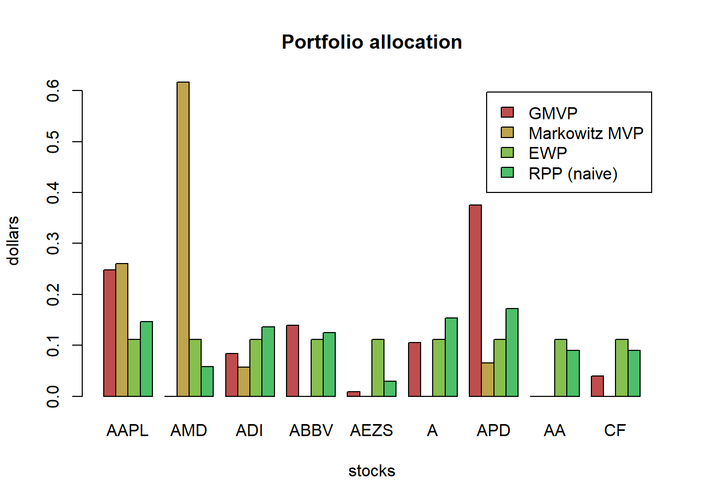
chart.CumReturns(ret_all_tst, main = "Cumulative return of portfolios (out-of-sample)",
wealth.index = TRUE, legend.loc = "topleft", colorset = rich8equal)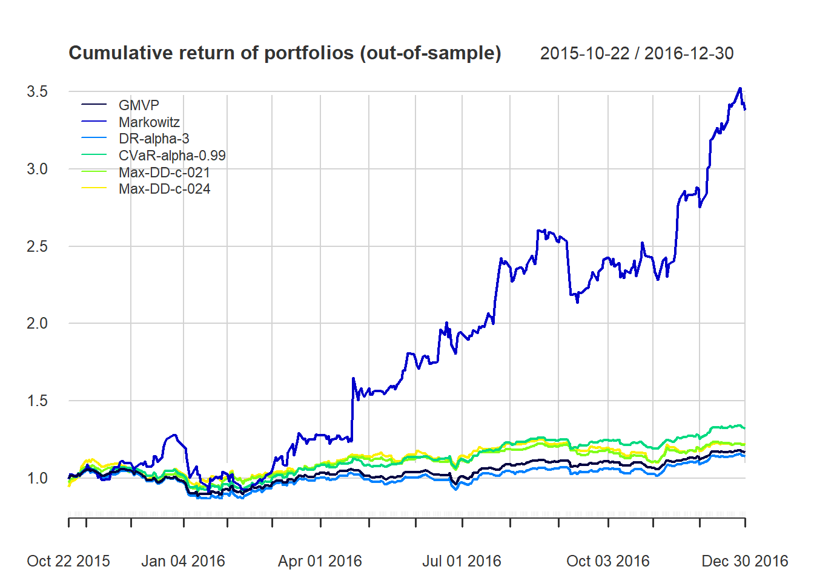
{ chart.Drawdown(ret_all, main = "Drawdown of portfolios",
legend.loc = "bottomleft", colorset = rich8equal)
addEventLines(xts("training", index(X_lin[T_trn])), srt=90, pos=2, lwd = 2, col = "darkblue") }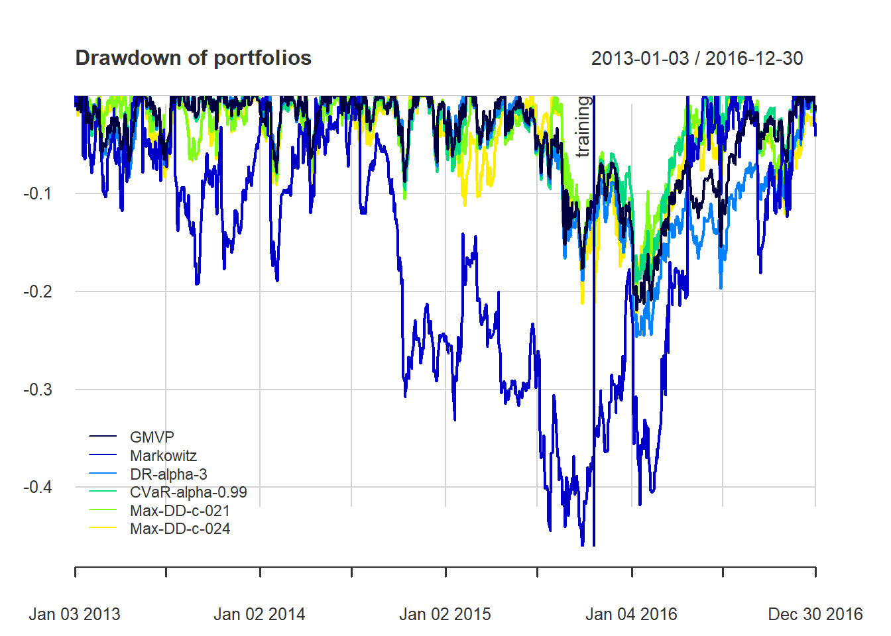
7.3.4 Mean - Ave-DD portfolio
\[\begin{array}{ll} \underset{\mathbf{w}, \{u_t\}}{\textsf{maximize}} & \mathbf{w}^T\boldsymbol{\mu}\\ \textsf{subject to} & \frac{1}{T}\sum_{t=1}^T u_t \le \sum_{t=1}^T\mathbf{w}^T\mathbf{r}_t^{\sf cum} + c\\ & \mathbf{w}^T\mathbf{r}_{t}^{\sf cum} \le u_t\\ & u_{t-1} \le u_t\\ & \mathbf{1}^T\mathbf{w}=1,\quad \mathbf{w}\ge\mathbf{0}. \end{array}\]
w_AveDD_c004 <- portfolioAveDD(X_log_trn, c = 0.04)
w_AveDD_c006 <- portfolioAveDD(X_log_trn, c = 0.06)
w_AveDD_c008 <- portfolioAveDD(X_log_trn, c = 0.08)
# combine portfolios
w_all <- cbind(w_all,
"Ave-DD-c-004" = w_AveDD_c004,
"Ave-DD-c-006" = w_AveDD_c006,
"Ave-DD-c-008" = w_AveDD_c008)
# compute returns of all portfolios
ret_all <- xts(X_lin %*% w_all, index(X_lin))
ret_all_trn <- ret_all[1:T_trn, ]
ret_all_tst <- ret_all[-c(1:T_trn), ]
# performance
t(table.AnnualizedReturns(ret_all_tst)[3, ])
#> Annualized Sharpe (Rf=0%)
#> GMVP 0.8331
#> Markowitz 3.3546
#> DR-alpha-3 0.6611
#> CVaR-alpha-0.99 1.4844
#> Max-DD-c-021 0.9763
#> Ave-DD-c-004 0.7577
#> Ave-DD-c-006 0.5573
#> Ave-DD-c-008 0.5571
t(maxDrawdown(ret_all_tst))
#> Worst Drawdown
#> GMVP 0.1618798
#> Markowitz 0.2924094
#> DR-alpha-3 0.1761356
#> CVaR-alpha-0.99 0.1396687
#> Max-DD-c-021 0.1580033
#> Ave-DD-c-004 0.1774612
#> Ave-DD-c-006 0.1935514
#> Ave-DD-c-008 0.1935575
t(AverageDrawdown(ret_all_trn))
#> Average Drawdown
#> GMVP 0.02524249
#> Markowitz 0.09056694
#> DR-alpha-3 0.02453672
#> CVaR-alpha-0.99 0.02443229
#> Max-DD-c-021 0.02651552
#> Ave-DD-c-004 0.03291538
#> Ave-DD-c-006 0.04524925
#> Ave-DD-c-008 0.04406289
t(AverageDrawdown(ret_all_tst))
#> Average Drawdown
#> GMVP 0.02412443
#> Markowitz 0.05260494
#> DR-alpha-3 0.02524018
#> CVaR-alpha-0.99 0.01909016
#> Max-DD-c-021 0.03006926
#> Ave-DD-c-004 0.04892681
#> Ave-DD-c-006 0.07760189
#> Ave-DD-c-008 0.07760833
{ chart.CumReturns(ret_all, main = "Cumulative return of portfolios",
wealth.index = TRUE, legend.loc = "topleft", colorset = rich8equal)
addEventLines(xts("training", index(X_lin[T_trn])), srt=90, pos=2, lwd = 2, col = "darkblue") }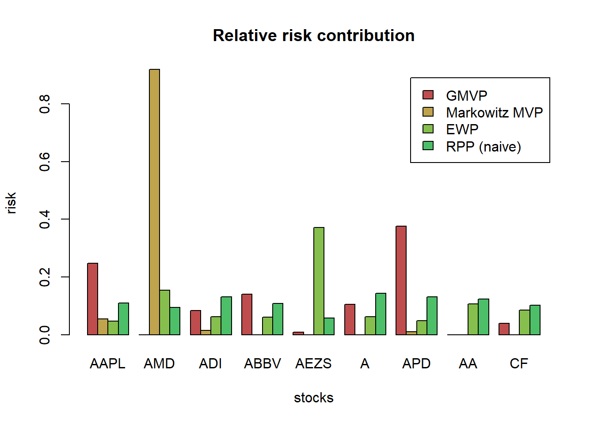
chart.CumReturns(ret_all_tst, main = "Cumulative return of portfolios (out-of-sample)",
wealth.index = TRUE, legend.loc = "topleft", colorset = rich8equal)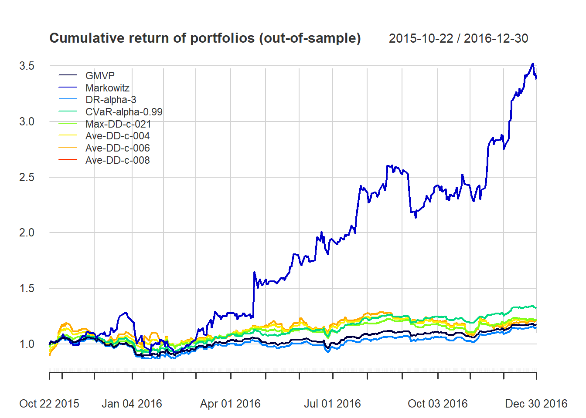
{ chart.Drawdown(ret_all, main = "Drawdown of portfolios",
legend.loc = "bottomleft", colorset = rich8equal)
addEventLines(xts("training", index(X_lin[T_trn])), srt=90, pos=2, lwd = 2, col = "darkblue") }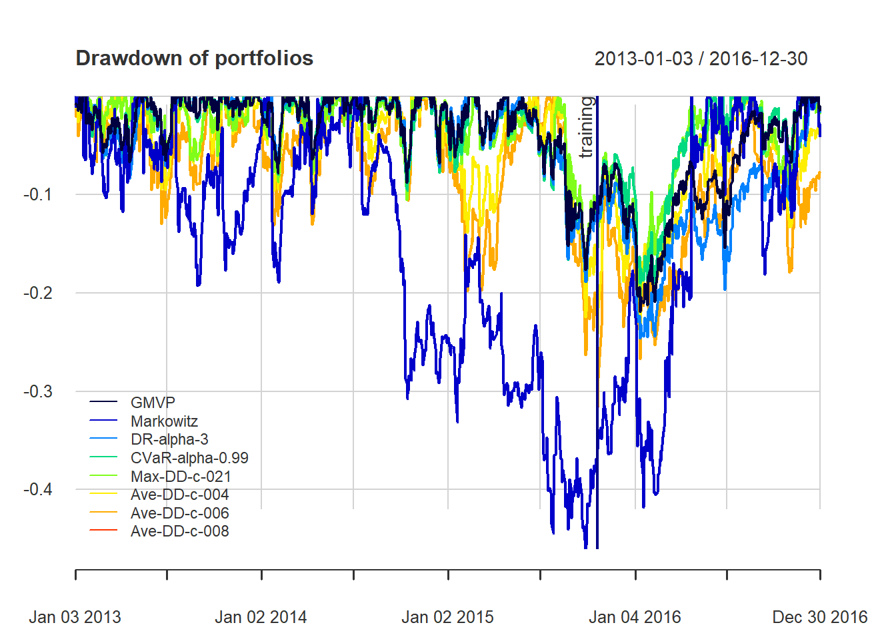
7.3.5 Mean-CDaR portfolio
\[\begin{array}{ll} \underset{\mathbf{w}, \{z_t\}, \zeta, \{u_t\}}{\textsf{maximize}} & \mathbf{w}^T\boldsymbol{\mu}\\ \textsf{subject to} & \zeta+\frac{1}{1-\alpha}\frac{1}{T}\sum_{t=1}^{T}z_{t} \le c\\ & 0\leq z_{t}\geq u_t - \mathbf{w}^T\mathbf{r}_t^{\sf cum} - \zeta, \quad t=1,\dots,T\\ & \mathbf{w}^T\mathbf{r}_{t}^{\sf cum} \le u_t\\ & u_{t-1} \le u_t\\ & \mathbf{1}^T\mathbf{w}=1,\quad \mathbf{w}\ge\mathbf{0}. \end{array}\]
w_CDaR095_c014 <- portfolioCDaR(X_log_trn, c = 0.14, alpha = 0.95)
w_CDaR095_c016 <- portfolioCDaR(X_log_trn, c = 0.16, alpha = 0.95)
w_CDaR099_c017 <- portfolioCDaR(X_log_trn, c = 0.17, alpha = 0.99)
w_CDaR099_c019 <- portfolioCDaR(X_log_trn, c = 0.19, alpha = 0.99)
# combine portfolios
w_all <- cbind(w_all,
"CDaR095-c-014" = w_CDaR095_c014,
"CDaR095-c-016" = w_CDaR095_c016,
"CDaR099-c-017" = w_CDaR099_c017,
"CDaR099-c-019" = w_CDaR099_c019)
# compute returns of all portfolios
ret_all <- xts(X_lin %*% w_all, index(X_lin))
ret_all_trn <- ret_all[1:T_trn, ]
ret_all_tst <- ret_all[-c(1:T_trn), ]
# performance
t(table.AnnualizedReturns(ret_all_tst)[3, ])
#> Annualized Sharpe (Rf=0%)
#> GMVP 0.8331
#> Markowitz 3.3546
#> DR-alpha-3 0.6611
#> CVaR-alpha-0.99 1.4844
#> Max-DD-c-021 0.9763
#> Ave-DD-c-004 0.7577
#> CDaR095-c-014 0.9438
#> CDaR095-c-016 0.8328
#> CDaR099-c-017 0.9851
#> CDaR099-c-019 0.9355
t(maxDrawdown(ret_all_tst))
#> Worst Drawdown
#> GMVP 0.1618798
#> Markowitz 0.2924094
#> DR-alpha-3 0.1761356
#> CVaR-alpha-0.99 0.1396687
#> Max-DD-c-021 0.1580033
#> Ave-DD-c-004 0.1774612
#> CDaR095-c-014 0.1625203
#> CDaR095-c-016 0.1719010
#> CDaR099-c-017 0.1546998
#> CDaR099-c-019 0.1633803
t(AverageDrawdown(ret_all_tst))
#> Average Drawdown
#> GMVP 0.02412443
#> Markowitz 0.05260494
#> DR-alpha-3 0.02524018
#> CVaR-alpha-0.99 0.01909016
#> Max-DD-c-021 0.03006926
#> Ave-DD-c-004 0.04892681
#> CDaR095-c-014 0.03583177
#> CDaR095-c-016 0.04215747
#> CDaR099-c-017 0.02268762
#> CDaR099-c-019 0.03383564
t(CDD(ret_all_trn))
#> Conditional Drawdown 5%
#> GMVP 0.06626555
#> Markowitz 0.19151542
#> DR-alpha-3 0.07137488
#> CVaR-alpha-0.99 0.06565987
#> Max-DD-c-021 0.06885930
#> Ave-DD-c-004 0.09463311
#> CDaR095-c-014 0.06892476
#> CDaR095-c-016 0.07966771
#> CDaR099-c-017 0.06613209
#> CDaR099-c-019 0.06828860
t(CDD(ret_all_tst))
#> Conditional Drawdown 5%
#> GMVP 0.06166899
#> Markowitz 0.09725709
#> DR-alpha-3 0.04296381
#> CVaR-alpha-0.99 0.05167597
#> Max-DD-c-021 0.08649004
#> Ave-DD-c-004 0.12860938
#> CDaR095-c-014 0.09780699
#> CDaR095-c-016 0.11536860
#> CDaR099-c-017 0.07797121
#> CDaR099-c-019 0.09600039
{ chart.CumReturns(ret_all, main = "Cumulative return of portfolios",
wealth.index = TRUE, legend.loc = "topleft", colorset = rich10equal)
addEventLines(xts("training", index(X_lin[T_trn])), srt=90, pos=2, lwd = 2, col = "darkblue") }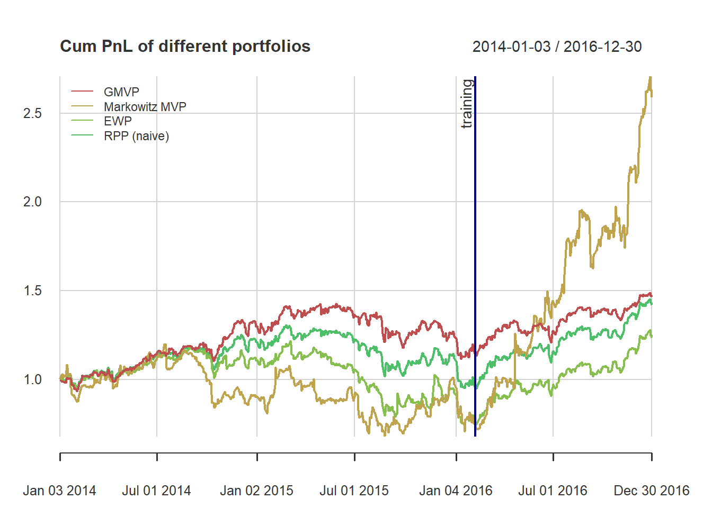
chart.CumReturns(ret_all_tst, main = "Cumulative return of portfolios (out-of-sample)",
wealth.index = TRUE, legend.loc = "topleft", colorset = rich10equal)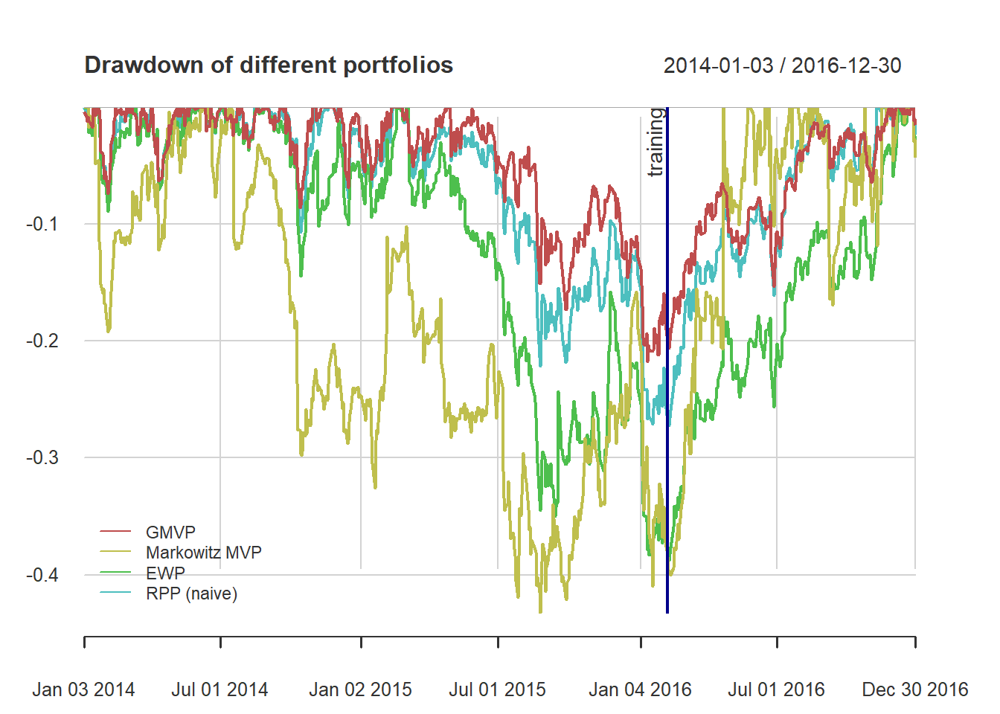
{ chart.Drawdown(ret_all, main = "Drawdown of portfolios",
legend.loc = "bottomleft", colorset = rich10equal)
addEventLines(xts("training", index(X_lin[T_trn])), srt=90, pos=2, lwd = 2, col = "darkblue") }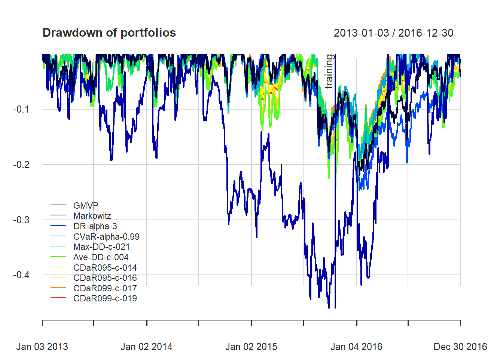
7.4 Comparison of DR, CVaR, and DD portfolios
# recompute returns of all portfolios
ret_all <- xts(X_lin %*% w_all, index(X_lin))
ret_all_trn <- ret_all[1:T_trn, ]
ret_all_tst <- ret_all[-c(1:T_trn), ]
t(table.AnnualizedReturns(ret_all_tst)[3, ])
#> Annualized Sharpe (Rf=0%)
#> GMVP 0.8331
#> Markowitz 3.3546
#> DR-alpha-3 0.6611
#> CVaR-alpha-0.99 1.4844
#> Max-DD-c-021 0.9763
#> Ave-DD-c-004 0.7577
t(maxDrawdown(ret_all_tst))
#> Worst Drawdown
#> GMVP 0.1618798
#> Markowitz 0.2924094
#> DR-alpha-3 0.1761356
#> CVaR-alpha-0.99 0.1396687
#> Max-DD-c-021 0.1580033
#> Ave-DD-c-004 0.1774612
t(AverageDrawdown(ret_all_tst))
#> Average Drawdown
#> GMVP 0.02412443
#> Markowitz 0.05260494
#> DR-alpha-3 0.02524018
#> CVaR-alpha-0.99 0.01909016
#> Max-DD-c-021 0.03006926
#> Ave-DD-c-004 0.04892681
t(CDD(ret_all_tst))
#> Conditional Drawdown 5%
#> GMVP 0.06166899
#> Markowitz 0.09725709
#> DR-alpha-3 0.04296381
#> CVaR-alpha-0.99 0.05167597
#> Max-DD-c-021 0.08649004
#> Ave-DD-c-004 0.12860938
{par(mfrow = c(1, 1), mar = c(5, 5, 4, 3))
barplot(w_all, col = rainbow10equal[1:9], legend = rownames(w_all), args.legend = list(x="topright", bty = "n", cex=0.8, horiz=FALSE, inset = c(-0.1,0)), beside = TRUE, main = "Portfolio allocation", xlab = "portfolio design", ylab = "weights", las=2, cex.names=.6)}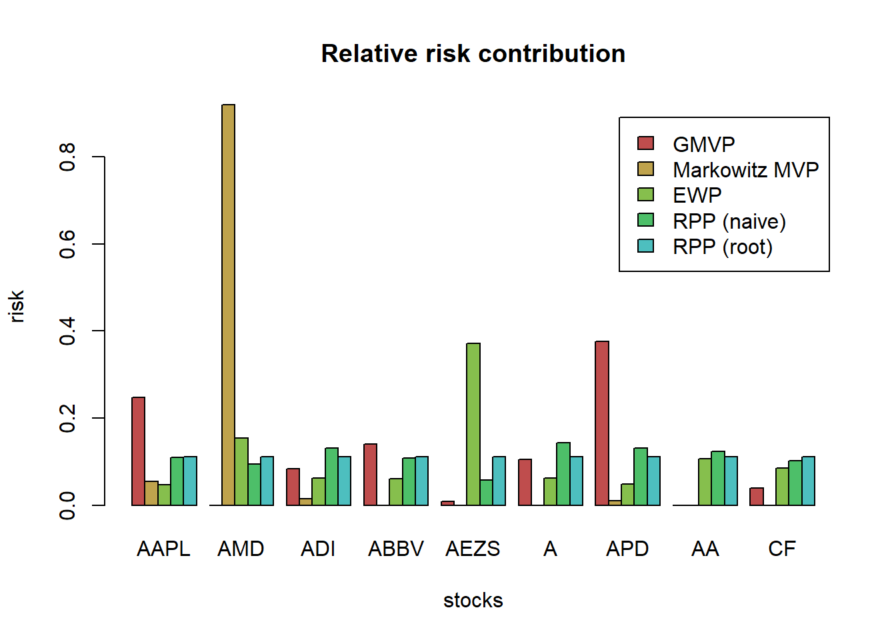
7.5 Conclusion
The maximum drawdown is extremely sensitive to minute changes in the portfolio weights and to the specific time period examined.
If the returns are close to normally distributed, the distribution of drawdowns is just a function of the variance, so there’s no need to include drawdowns explicitly in your portfolio construction objective. Minimizing variance is the same as minimizing expected drawdowns.
On the other hand, if returns are very non-normal and you want to find a portfolio that minimizes the expected drawdowns, you still wouldn’t choose weights that minimize historical drawdown. Why?
Because minimizing historical drawdown is effectively the same as taking all your returns that weren’t part of a drawdown, and hiding them from your optimizer, which will lead to portfolio weights that are a lot less accurately estimated than if you let your optimizer see all the data you have.
Instead, you might just include terms in your optimization objective that penalize negative skew and penalize positive kurtosis
As a note of caution, one has to be careful with CVaR and CDaR portfolios due to the sensitivity to the used data (if not enough data, they will not be reliable).